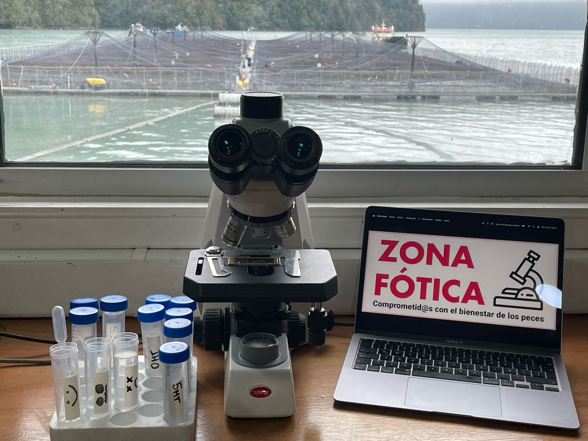
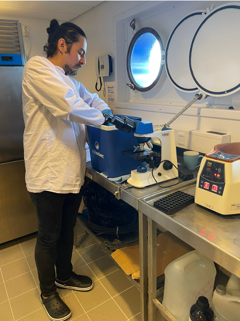
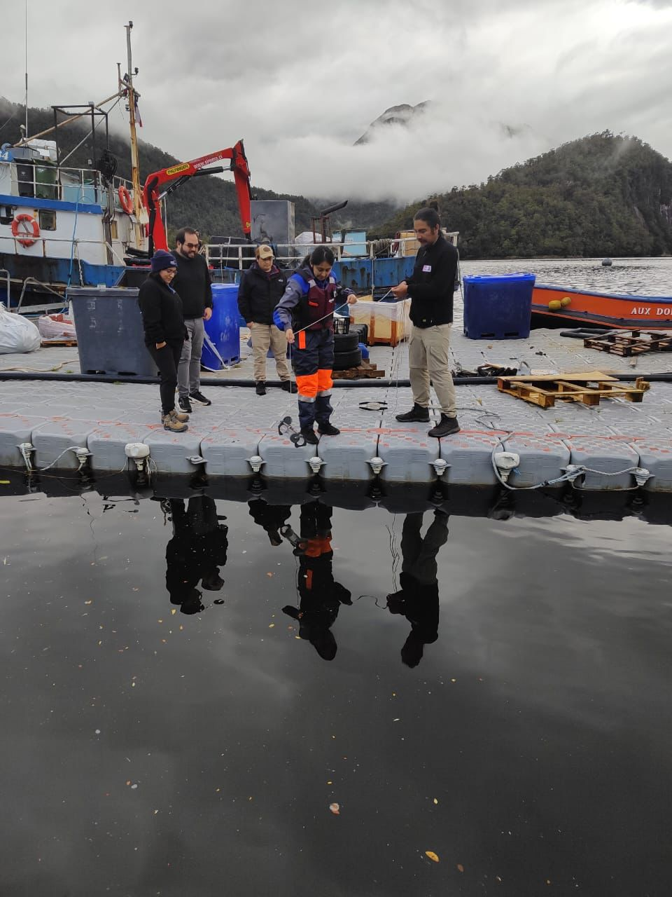
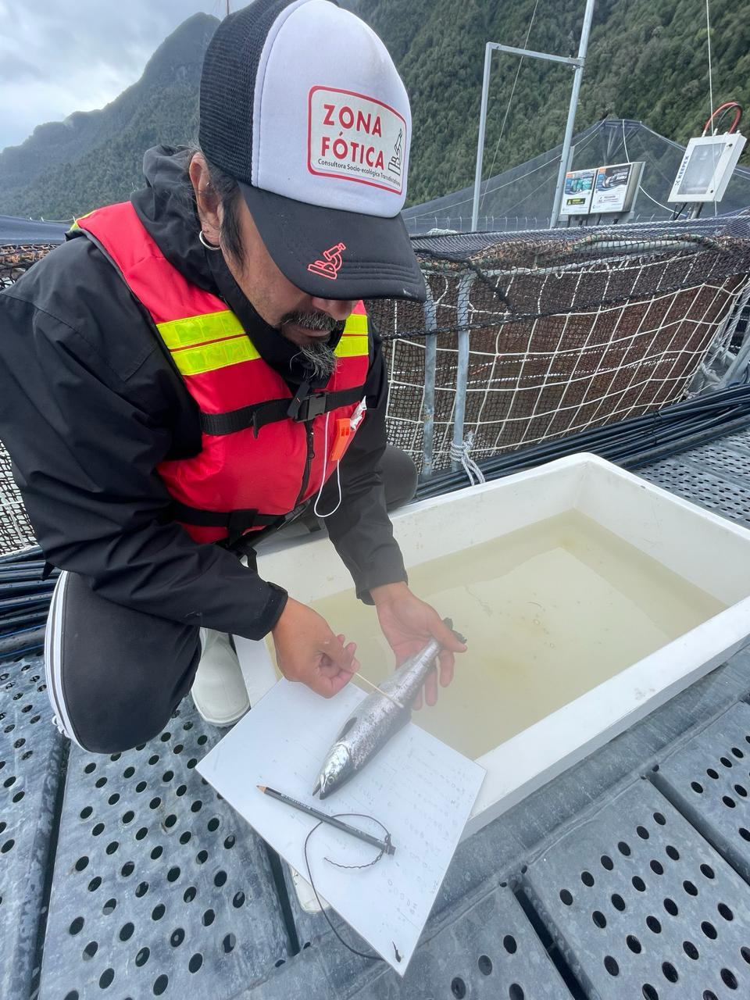
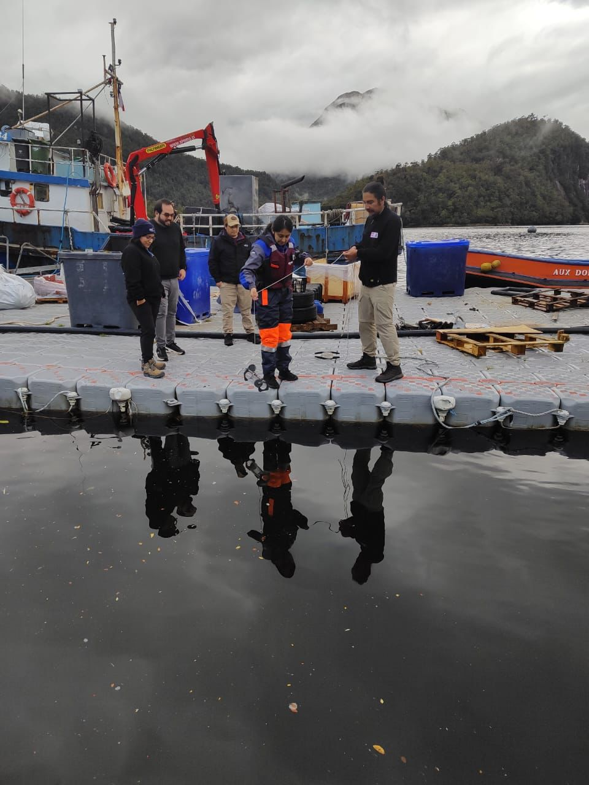
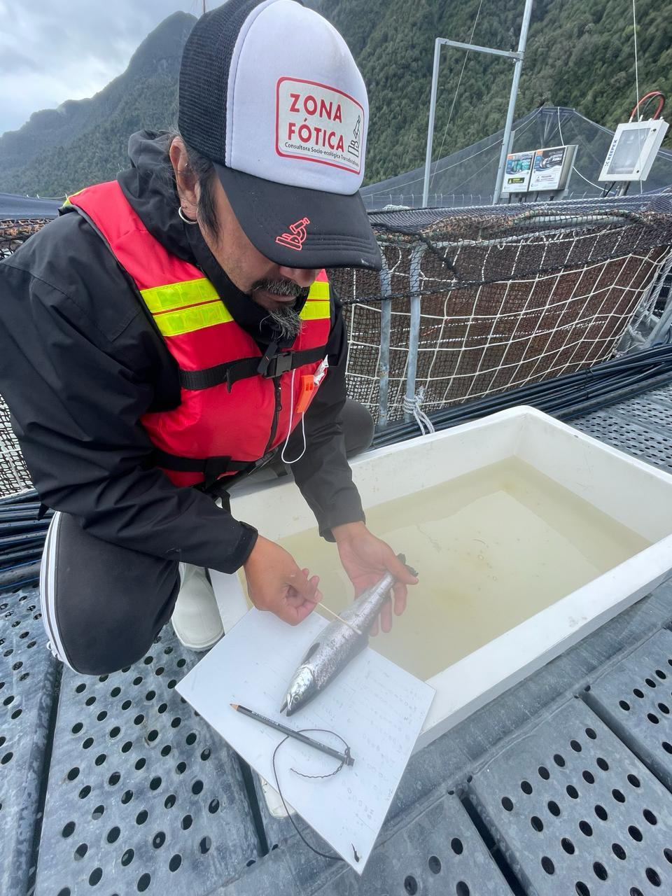

Principios
Excelencia, Profesionalismo y Expertiz Honestidad, Responsabilidad, Rigurosidad y Probidad Innovación con Base en Ciencia y Tecnología Alineados con las 3R (Reducir, Reutilizar y Reciclar) Trabajo en Equipo; junto a investigadoras/es de instituciones públicas abocadas a aportar en el análisis y resolución de las problemáticas de la industria acuícola
Visión
Nuestra visión en Zona Fótica es forjar un camino donde la coexistencia armoniosa entre la acuicultura y el ambiente sea el rumbo. Buscamos ser reconocidos globalmente como líderes en la gestión responsable de centros de engorda, impulsando prácticas innovadoras y sostenibles que beneficien tanto a la industria como a la biodiversidad marina, asegurando un legado positivo para las generaciones futuras.
Misión
En Zona Fótica, nos comprometemos a liderar la protección de los organismos hidrobiológicos en centros de engorda a través de servicios especializados de identificación y cuantificación de microalgas nocivas. Buscamos no solo brindar soluciones precisas y eficientes, sino también promover la sostenibilidad ambiental, velando por el bienestar animal y el equilibrio de los ecosistemas acuáticos.
Servicios
Identificación y cuantificación de especies de microalgas nocivas para salmónidos en centros de engorda y/o en el track de navegación vía wellboat.
Evaluación de la efectividad de cortinas de microburbujas contra Floraciones Algales Nocivas (FAN).
Evaluación y cuantificación del bienestar de los peces (fish welfare) en puntos críticos de la cadena de valor de la salmonicultura.
Evaluación y estimación de la calidad de materia prima próxima a cosecha, en términos de degradación por madurez y heridas.
Talleres de capacitación con cultivos vivos para identificar especies que producen FAN y capacitación en bienestar de peces (fish welfare) generando un aprendizaje significativo.
Además, ofrecemos un servicio innovador de identificación remota de especies generadoras de FAN, utilizando tecnología avanzada para el monitoreo a distancia.
Por otra parte tenemos un amplio portafolios de consultorías y estudios, asesorando distintos puntos de la cadena de valor de la salmonicultura.
Estamos comprometidos con la excelencia, la innovación y la sostenibilidad, contribuyendo al éxito continuo de la industria acuícola a nivel global.
Galeria
 
 


